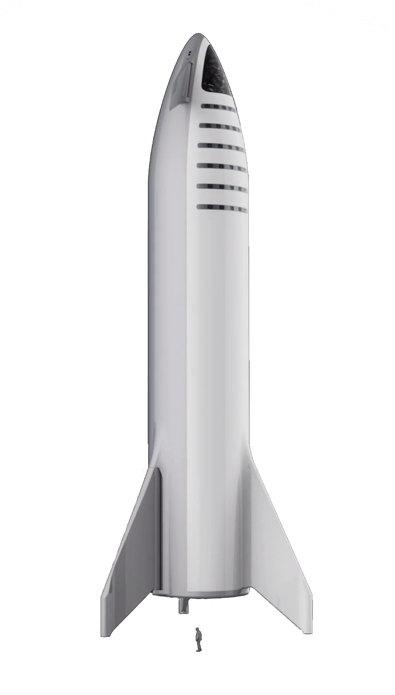

Data about the Human Spaceflight mission
Learn more about being a passenger
The spacecraft with the name Starship will be used for the transportation of both humans and cargo between Earth and Mars. Starship is the fully reusable spacecraft and second stage of the Starship system. It offers an integrated payload section and is capable of carrying passengers and cargo to Earth orbit, planetary destinations, and between destinations on Earth.
Tap for more... Hover for more...Data about the flight
Learn more about living on Mars

At an average distance of 140 million miles, Mars is one of Earth's closest habitable neighbors. Mars is about half again as far from the Sun as Earth is, so it still has decent sunlight. It is a little cold, but we can warm it up. Its atmosphere is primarily CO2 with some nitrogen and argon and a few other trace elements, which means that we can grow plants on Mars just by compressing the atmosphere. Gravity on Mars is about 38% of that of Earth, so you would be able to lift heavy things and bound around. Furthermore, the day is remarkably close to that of Earth.
Tap for more... Hover for more...